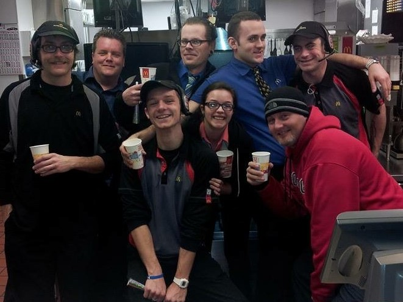
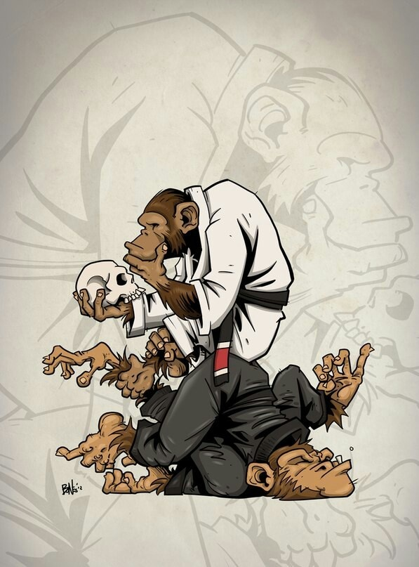

Here is a little more about Josh
Hello, my name is Josh and I want you to get to know me.
I am from Washington State. I worked at Mcdonalds for close to 5 years and in that time I grew close to many of my co-workes and considered them part of my family. One of the shifts I worked in my time there was the graveyard shift. I worked from 10pm until 6 am . It was fun the first week or so but then it got to the point where I was always tired. I made a lot of good memories there like one New years Eve where the boss came in and said Happy New Year and partied with us for a little while.


Since moving from Washington to Wisconsin a year ago I have done things that I wouldn't normally do because they are outside of my comfort zone, such as, taking Braziln Jiu Jitsu and coming to a 12 week coding bootcamp. I'm glad that I had this chance to try not one but two new things.
Growing up I never thought that I would be anybody speical because I never had the drive to make my dreams come true. I always wished that things would happen the way I wanted them to. I knew that my passion was to make something great that would make my friends and family proud. I thought it would great if the were able to be like, I know the maker of this, but I put my passion on hold for a while because I didnt think I could achieve my dreams. One day, while visiting my grandparents, my grandma asked me, "Josh what do you want to do with your life? Whats your plan?" I thought it over and I said, "you know I'm not to sure about that yet, but I did see this school where they teach you to code in 12 weeks." My grandma said to me, "ok and what is it going to take for you to go to that?" So, we looked at it and found out what I needed to do to go to school and here I am now, making the website you're looking at.
The last thing I want you to know about me is that I have this dream to travel the world. A few places that I want to go are Iceland, Ireland, France and Italy.
The pictures of some of the destinations I want to visit.
This is Jökulsárlón lake in Iceland
This is Dromoland Castle in Ireland

The Colosseum
The Eiffel Tower